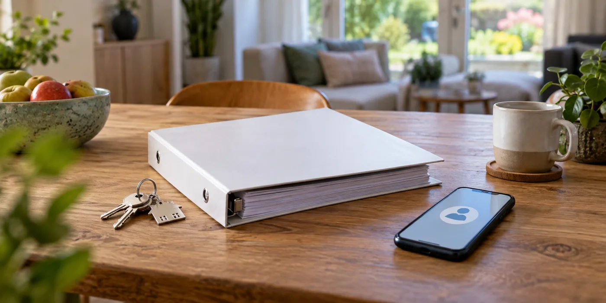

Maak de installatie herkenbaar
Verzamel schema’s, keuring, serienummers en informatie over de regeling. Benoem eventuele abonnementen en overeenkomsten met derde partijen. Laat de contractuele overdracht daarvan beoordelen in het verkooptraject. Veronderstel niet dat de apparatuur en alle diensten onder dezelfde voorwaarden meegaan.
Regel toegang zonder wachtwoorden te delen
Vraag de fabrikant of installateur naar de procedure voor een nieuwe eigenaar. Maak geen overdracht door simpelweg je persoonlijke accountwachtwoord af te geven. Bespreek hoe de oude toegang wordt beëindigd en welke historische data beschikbaar blijven. De nieuwe eigenaar moet een eigen beheerroute krijgen.

Controleer de administratieve overdracht
Fluvius beschrijft eigendomsoverdracht van groene installaties. Vraag welke melding voor jouw dossier nodig is. Maak bij de sleuteloverdracht een overzicht van ontvangen documenten, toegang en nog open acties. Plan zo nodig een uitleg door de installateur, vooral wanneer noodstroom of externe sturing onderdeel van het systeem is.
Maak een overdrachtslijst voor alle betrokken partijen
Vraag de installateur, eventuele dienstverlener en netbeheerder welke handelingen voor jouw systeem nodig zijn. Zet de antwoorden naast elkaar zonder te veronderstellen dat één melding alles regelt. Bewaar bevestigingen van gewijzigde toegang en afspraken over historische gegevens. De overdracht van hardware, energieadministratie en softwarebeheer kan verschillende stappen vragen. Met een afvinkbare lijst kunnen verkoper en koper zien welke onderdelen afgerond zijn en welke nog een vervolgactie nodig hebben.
Een praktisch voorbeeld
Een batterij wordt slim gestuurd via het account van de verkoper. De koper moet dan niet alleen een handleiding krijgen, maar ook weten hoe die dienst overgaat of stopt. Leg dat als apart overdrachtspunt vast.
Illustratief scenario, geen klantcase.
Neem dit mee naar je gesprek
- Apparatuur en serienummers
- Abonnementen en beheerrechten
- Eigen account voor nieuwe eigenaar
- Administratieve overdracht bevestigd
Veelgestelde vraag
Kan ik mijn appwachtwoord aan de koper geven?
Gebruik liever de officiële overdrachtsprocedure met een eigen account en duidelijke beëindiging van je oude toegang.
Bron en achtergrond
Fluvius: officiële of technische achtergrond bij dit onderwerp ↗
Geraadpleegd op 13 oktober 2026. De praktische checklist en het voorbeeld zijn redactionele uitwerkingen. Fabrikantinformatie geldt voor de beschreven producten; ze is geen algemene garantie voor andere systemen.
Wat betekent dit voor jouw woning?
Gebruik de calculator voor een eerste indicatie. Een vakman beoordeelt jouw situatie en bevestigt de uitvoering en definitieve prijs.
Bekijk de thuisbatterijcalculator →